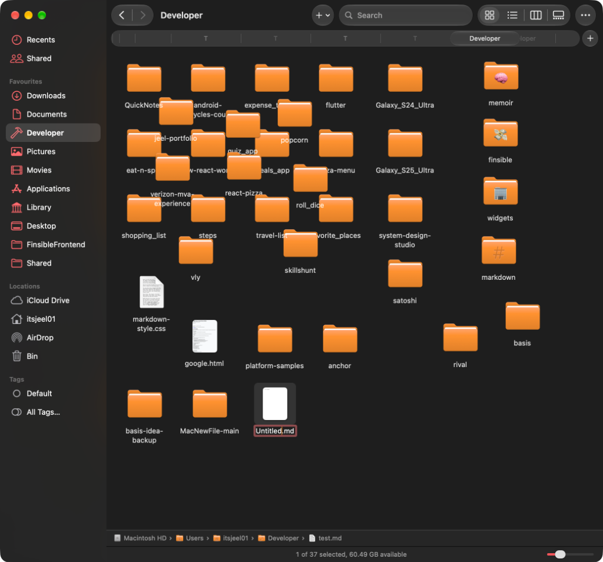
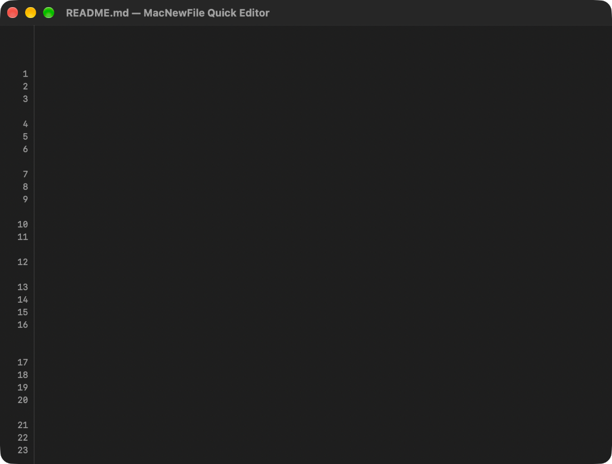
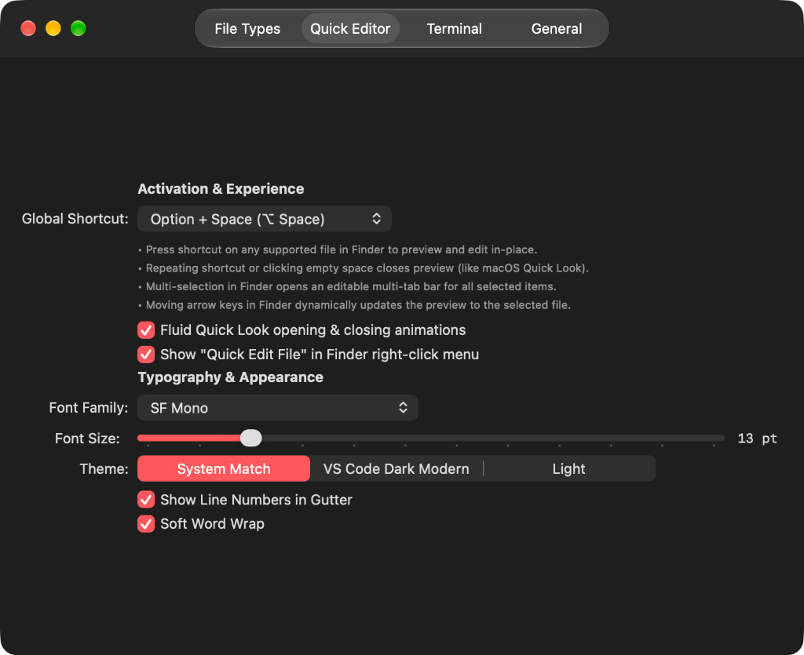

Right-click for a new file.
⌥ Space to edit it.
Finder can't make a new text, Markdown or JSON file. MacNewFile adds that to the right-click menu, plus a Quick Look-style editor so you can fix a line without opening VS Code.
xattr -dr com.apple.quarantine /Applications/MacNewFile.app

Up and running in four steps
One action per step to clear macOS security flags and activate Finder integration.
Move to Applications
Download MacNewFile.zip or install via Homebrew, then move MacNewFile.app into /Applications.
Clear Quarantine Flag
Open Terminal and remove the Gatekeeper quarantine attribute on this application bundle:
Enable Finder Extension
In System Settings, check MacNewFile under Finder Extensions. If it does not appear immediately, run killall Finder in Terminal.
macOS 13–14: Privacy & Security → Extensions → Finder
Grant Accessibility
Allow Accessibility so ⌥ Space can inspect active Finder selections via AppleScript. MacNewFile runs entirely offline with zero network calls and zero telemetry; nothing leaves your machine.
Small, native, no Electron
A sandboxed FinderSync extension in Objective-C (~21.4 MB) paired with a native Swift menu bar companion (~146.3 MB app, ~24.4 MB AutoFill helper). Zero background daemons outside the menu bar process.
Native right-click file creation
Right-click in any Finder directory or on the Desktop to create files with ready-to-edit starter boilerplate.
- Create 31 built-in formats (code, markdown, json, scripts) or custom extensions with boilerplate directly in the active folder.
- Type immediately with automatic inline rename focus on creation.

In-place Quick Editor with ⌥ Space
macOS Quick Look (Space) is strictly read-only. Select any supported file in Finder and press ⌥ Space to inspect and fix lines in place.
- Edit text, code, or markdown files in-place with ⌥ Space without launching an external editor.
- Save instantly with ⌘S or press ⌘↵ to hand off to VS Code, Cursor, or Zed.

Independent file type controls
Decide exactly which formats appear in which context. Enable an extension for the right-click menu without adding it to the Quick Editor, or vice versa.
- Choose which formats appear in the right-click menu independently from the Quick Editor.
- Register custom extensions and templates in Settings (⌘,) without restarting Finder.

System fonts and appearance
Personalize the Quick Editor using native macOS system fonts and quiet themes.
- Set editor typography using installed macOS monospace fonts like SF Mono, Menlo, JetBrains Mono, or Fira Code.
- Toggle line numbers, word wrap, and dark or light themes.

Essential shortcuts
Keyboard controls for file navigation and in-place editing.
| Shortcut | Context | Action |
|---|---|---|
| ⌥ Space | Finder (file selected) | Open or close Quick Editor (toggle) |
| ⌘S | Quick Editor | Save changes in place without leaving Finder |
| Escape or ⌘W | Quick Editor | Close Quick Editor |
| ⌘↵ | Quick Editor | Open active file in external editor (VS Code, Cursor, Zed) |
| ↑ / ↓ / ← / → | Finder (editor open) | Switch preview to newly selected file |
| ⌘, | MacNewFile Menu Bar | Open Settings window |
+ icon → Settings) → Quick Editor tab, and select an alternate shortcut (⌘⇧E, ⌃⌥N, or ⌘⌥E).
Supported file formats
31 built-in formats create clean files with boilerplate templates, plus support for custom user extensions.
Open in terminal
Right-click any folder or desktop space in Finder to jump directly into your configured emulator.
Configure your preferred emulator and command template in MacNewFile Settings (⌘,) → Terminal tab.
What Finder doesn't do today
Five friction points in standard macOS Finder, resolved natively.
.txt or .json file requires opening an application first.touch filename means opening a shell, navigating to the folder path, and typing the name manually.Install MacNewFile
Choose Homebrew, direct release download, or compile from source.
Install via Homebrew:
brew install --cask macnewfile
Then follow the 4-step setup guide above to enable the Finder extension and Accessibility permissions.
How do I enable the Finder extension?
On macOS 13 (Ventura) & macOS 14 (Sonoma): Open System Settings → Privacy & Security → Extensions → Finder and enable MacNewFile.
If the menu does not appear immediately, restart Finder by running
killall Finder in Terminal.
⌥ Space does not open the Quick Editor
Why is an xattr command needed for direct download?
Does MacNewFile work inside iCloud Drive?
How do I add custom file extensions?
.svelte, .proto), name, and optional default starter template.
Automated verification
MacNewFile includes a 180-test verification suite that exercises hotkeys, FinderSync extension resolution, multi-tab states, and terminal commands.
swift tests/run_full_test_sweep.swift